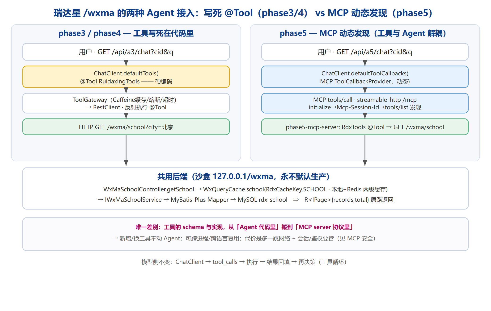

项目清单
两条主线：高并发后端家族（压测 + 治理 + 微服务）与 AI Agent 工程化家族（Spring AI 渐进式实战）。每个项目都附带可复现的压测/运行命令与实测数据。
高并发后端家族
Redis 高并发缓存架构
11 场景压测覆盖 Pipeline 边界/槽位、哨兵 vs 集群写入选型、热点 Key、String 三种编码（int/embstr/raw）压测、分布式信号量竞争等。含 Lettuce/Pipeline 问题排查与优化，产出 benchmark 图表与面试简述。
MySQL 治理与调优
18 主场景 + 12 补测事务隔离/锁体系、悲观锁 vs 乐观锁、分库分表、读写分离与主从延迟、冷热分离、连接池调优、死锁监控。附 KingbaseES 锁与事务排查手册与 Sysbench 硬件上限压测。
Spring Cloud 高并发电商
Seata AT · 全链路压测order/user/inventory 三服务，Seata AT 分布式事务（order_db/user_db/inventory_db/seata_db），Spring Cache + Redis 旁路缓存，SQL 乐观锁处理并发。k6 全链路压测报告 + 容量规划与扩容指南。
Elasticsearch 源码研读
传输层 / 集群协调深入研读 ES Java 源码：传输层、集群协调、搜索执行层 Query + Fetch 两阶段，梳理核心技术实现逻辑。
K3s / K8s 运维
manifests + 网络策略Namespace/ConfigMap/Secret/Deployment/Service/Ingress + Redis StatefulSet，NetworkPolicy 默认拒绝 + Redis 仅允许访问。配套学习路线与 compose vs k8s 对比。
Jeepay 支付集成
下单→回调闭环覆盖下单、支付触发、调用 Jeepay、接收回调全流程；修复回调仅更新支付状态未回写订单状态（PAID）的缺陷，以及容器内 localhost 访问宿主机的网络配置。
k6 压测体系
50→300 并发梯度基准脚本 + 多档并发（50/100/150/200/250/300）压测脚本，秒杀/库存/余额/突发尖峰等场景，输出 benchmark HTML 报告。
秒杀 Demo
多档 benchmark 报告库存场景压测 Demo，docker-compose 一键起，自带 100/150/200/250/300 并发 benchmark HTML 报告与 init.sql。
Member 项目
docker-compose 微服务会员域微服务，docker-compose 编排，作为高并发家族的配套子模块。
AI Agent 工程化家族
Phase 1 · 最小 Agent
8080 · 实测 576+ 已发货@Tool 工具循环 + 流式输出，打通"模型调用工具→拿结果→再推理"的最小闭环。
Phase 2 · RAG
8082 · 召回 83%embedding + 向量库 + 带引用问答 + 召回评测。深读分层/Document/SimpleVectorStore/混合检索+rerank。
Phase 3 · 业务 Agent
8083 · 多轮记忆真实业务接口当 @Tool + 多轮记忆 + SSE。实测北京 1/2/11 院校、追问上海走记忆。
Phase 4 · Agent 运维
8084 · 缓存 A/B p95 836→12ms可观测 + 降级 + LLM 舱壁 + 缓存 + 自研熔断，k6 压测。舱壁 6/s→90% 503，缓存 A/B p95 从 836ms 降到 12ms，熔断 16 次拒绝。
Phase 5 · MCP
8085/8086 · 真实取数把 /wxma 封成 MCP Server（streamable-http），Agent 改 MCP 客户端动态发现工具，通道真实取数。
Phase 6 · 评测
8087 · 关键词 100% / 裁判均分 1.8评测 harness：关键词硬校验 + LLM-as-judge，通过率/均分；CI 门禁任一维通过率 < 90 则失败。实测关键词 100%、LLM 裁判 pass 100%。
rdx-agent 产品层
8090 · gold 13/13rag_search（向量+BM25+RRF+rerank）+ MCP 业务工具 + Redis（向量/缓存/记忆）+ resilience4j + Langfuse 评测 + 鉴权/脱敏。语义缓存带维度一致性护栏（guardRejects=1）。
rdx-bx-backend 沙盒
端口 80瑞达星后端沙盒（可改，原仓不碰），作为 Agent 业务工具的被测后端与基础设施来源。
